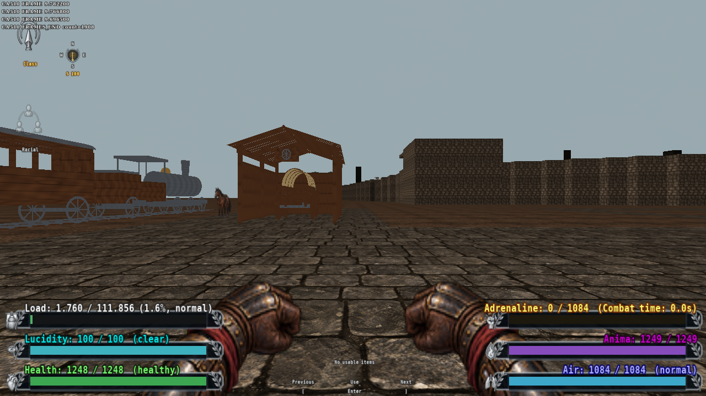

Retained environment materials
Issue #866 · 5.17.111 · author review pending
These eight remasters come from the author’s original pack. Production assets remain active. The review overlay changes shared aliases globally while loaded; use its dedicated session. No visual acceptance is assumed.
The supplied 512×512 exports retain a 128-MU / 4-m repeat. Eight unique RGBA base images cost an estimated 8 MiB, or about 10.67 MiB with mipmaps; this is not measured VRAM. Separate alias allocations may cost more.
CMWIN36, CSUFA0, CTFWA0 and the mansion door gable still use original raw images. Other mansion compositions and city brick/props also retain their existing art. The candidate does not finish all scenery.
Exact source images
Native before / after
Fixed camera, unchanged lighting and geometry. Captures are 1520×825 despite the requested 1280×720. Diagnostic teleports, menu dismissal, invulnerability and notarget are disclosed. The repeat laboratory places every material on all planes for inspection; grass walls and tiled floors are not campaign proposals.
C866LAB / CMEX01
Private 384-MU material room, three authored128-MU repeats per side; diagnostic dimensions only
C866LAB / CMEX04
Private 384-MU material room, three authored128-MU repeats per side; diagnostic dimensions only
C866LAB / CMST01
Private 384-MU material room, three authored128-MU repeats per side; diagnostic dimensions only
C866LAB / CMST02
Private 384-MU material room, three authored128-MU repeats per side; diagnostic dimensions only
C866LAB / CMWD01
Private 384-MU material room, three authored128-MU repeats per side; diagnostic dimensions only
C866LAB / CMTB04
Private 384-MU material room, three authored128-MU repeats per side; diagnostic dimensions only
C866LAB / CMGR01
Private 384-MU material room, three authored128-MU repeats per side; diagnostic dimensions only
C866LAB / CMGR02
Private 384-MU material room, three authored128-MU repeats per side; diagnostic dimensions only
MAP01 / garden
Existing player start
MAP01 / exterior
 Current production materials
Current production materials Supplied candidate
Supplied candidateOutside existing mansion footprint; diagnostic viewpoint
MAP01 / interior
Inside existing REPAIR interior footprint
MAP02 / justice
Centre of existing sector104, CMST02 floor and CMST01 ceiling; diagnostic access does not unlock this room
MAP03 / port
Existing revised quay player start
MAP03 / street
Outside existing building0 east facade, current LAYOUT bounds
MAP03 / factory
Centre of current building0 bounds; CMST01 floor
MAP03 / street_outward
Same existing building0 threshold, looking north along the open road instead of into the factory
Serial 1280×720 Vulkan windows, unpaused background and 5% audio. Queue presentation is not monitor scanout. A single pair does not prove a stable cost difference. The mansion retains its opening dialogue; siege fluency remains unresolved. Full tails and state: performance.json.
city
Control · 105.049 queue presents/s
Candidate · 105.998 queue presents/s
CA866-MATERIAL-01 remains pending for the consolidated author session. Repeated wear patterns, grass contrast and shared-surface coverage require artistic judgment.